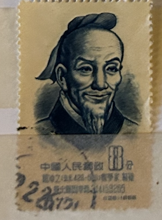
| SOURCE | TITLE| IMAGE MATCH | click to source page |
| Colnect | Stamp: Tsu Chung-chih (A.D. 429-500), mathematician (China, People's Republic(Scientists of Ancient China (1st Set)) Mi:CN 279,Sn:CN 246,Yt:CN 1053,Sg:CN 1661 📮 | 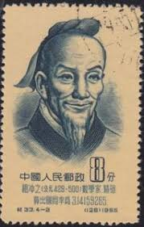 |
| eBay | China 1955 8 feng C33 4-2 single Scientists of Ancient China 1st Series mint NH | eBay | 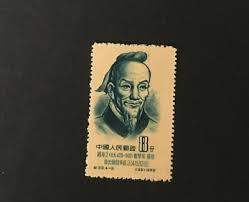 |
| brstamp.com | 纪33 中国古代科学家（第一组） 1955.8.25 – 左氏珍藏 | 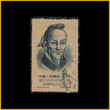 |
| datadeluge.com | Ancient Geometry, Stereology & Modern Medics - Data Deluge | 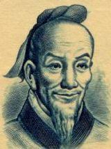 |
| Colnect | Stamp: Tsu Chung-chih (China, People's Republic(Ancient Chinese scientists) Mi:CN BL2,Sn:CN 246a,Yt:CN BF5,Sg:CN MS1663b 📮 | 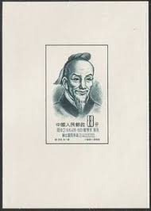 |
| Osta | Hiina 1956,Tsu Ch'ung-chih,matemaatik,429-500 AD (188806845) - Osta.ee | 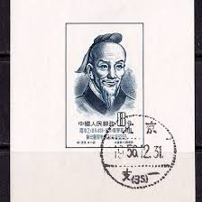 |
| University of Arkansas | Short History of the Infinite | 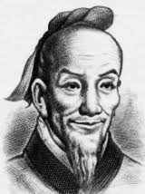 |
| eBay | 1955 China stamp sc#245-246, Fen Ancient Scientist, MNH | eBay | 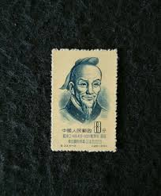 |
| eBay | Chinese Red Cross Stamps for sale | eBay | 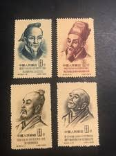 |
| eBay | China VR Michelnummer 279 A gestempelt (europa:15768) | eBay | 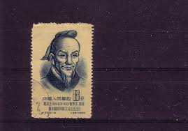 |
| LiveJournal | Сокровища под красным знаменем | 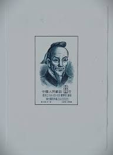 |
| 搜狐网 | 中国古代科学家》系列邮票：1955年第一组“李时珍、张衡、祖冲之、僧一行”_搜狐网 | 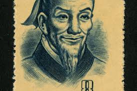 |
| tglsalesschool.com | ASG 中国切手 公元前 蔡倫 科学者 紀92 4分 ASG 中国切手 公元 | 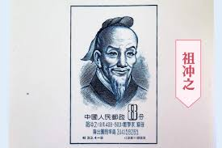 |
| Shutterstock | China Prc 1955 August 25 8 Stock-foto 2196182605 | Shutterstock | 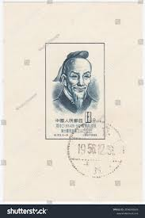 |
| eBay | China (PR) #245-8 used | eBay | 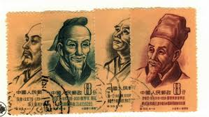 |
| Bob Shop | China - 1955-195 - China - 8 + 8 + 8 - Scientists of Ancient China was listed for 0.00 on 9 Oct at 20:01 by Mantique in Pretoria / Tshwane (ID:656562349) | 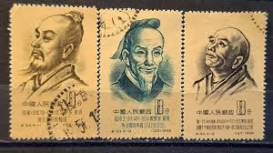 |
| Just Collecting | $700,000 sale expected for ultra rare Chinese coins | 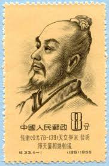 |
| SlideServe | PPT - 邮票上的中国数学家PowerPoint Presentation, free download - ID:5091981 | 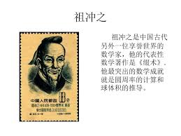 |
| eisatopon.gr | EisatoponAI: Who says Chinese mathematicians are idiots? | 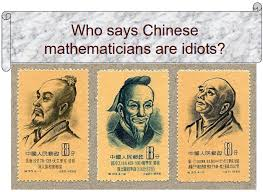 |
| eBay | PR CHINA PROOF TSU-CHUNG-CHI 1955 SPACE M/S S/S RARE!! m3495 | eBay | 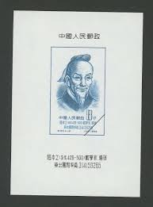 |
| Find Your Stamps Value | Portraits of Scientists: Li Shih-chen (1518-1593), physician and pharmacologist - 科学家肖像: 李时珍(公元1518-1593), 医生和药理学家8f Claret, Buff stamp price, value | 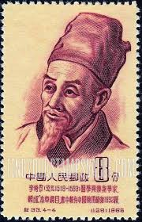 |
| Singapore Medical Journal | Medicine in Stamps Li Shih-Chen (1518-1593): Herbalist of Renown | 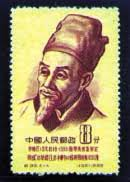 |
| HipStamp | China Stamp:1953,Sc# 202-5- Ancient Famous People :Stamp Mnh-Set. | Asia - China, General Issue Stamp / HipStamp | 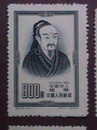 |
| Alamy | Li Shizhen Stamp of China Stock Photo - Alamy | 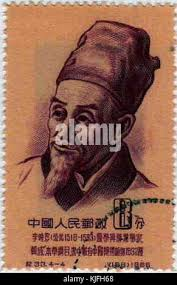 |
| South China Morning Post | Reflections | The Chinese history book that got 70 people executed, 14 very slowly via 'death by a thousand cuts' | South China Morning Post | 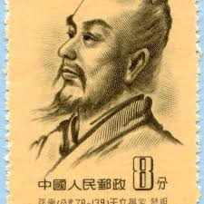 |
| Shutterstock | 53 Chang Heng Royalty-Free Images, Stock Photos & Pictures | Shutterstock | 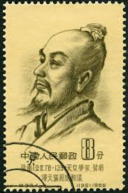 |
| Amazon.com | Amazon.com: 祖冲之/新编历史小丛书: 9787530005453: 圖書 | 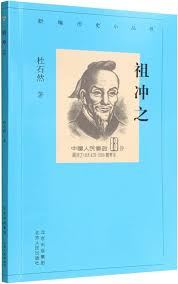 |
| eBay | Lightly Hinged Multi-Color Taiwan Stamps for sale | eBay | 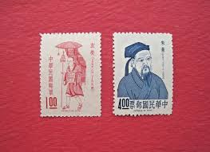 |
| China Whisper | Top 5 Most Famous Chinese in History | ChinaWhisper | 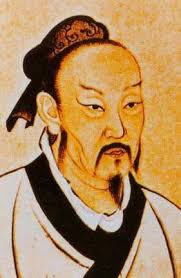 |
| Shutterstock | Taiwan -circa 1967 Stamp Printed Taiwan Stock Photo 92107865 | Shutterstock | 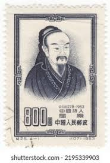 |
| Pin by David Maxwell on Nisargadatta Maharaj | Life coach quotes, Spiritual quotes, Awakening quotes | 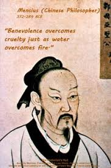 | |
| 天天要聞 | Zu Chongzhi not only calculated Pi | People - science| DayDayNews | 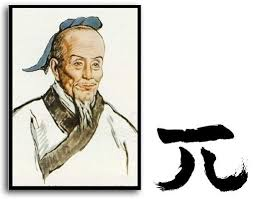 |
| Scribd | Historical Icons: Sun Tzu, Confucius, Gandhi | PDF | 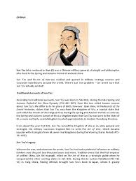 |
| Burda Auction | China / Far East and CIS / Asia / Philately / Online Auction 65 | Burda Auction | 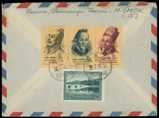 |
| Kwize | Sun Tzu: “A clever general, therefore, avoids an army when...” | 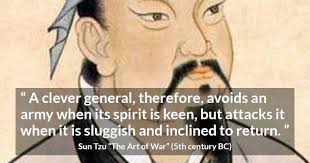 |
| Dead Philosophers Society | Facebook | 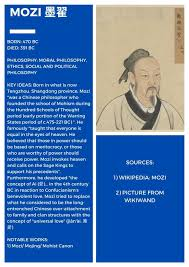 | |
| Kwize | Sun Tzu: “Appear at points which the enemy must hasten to defend;...” | 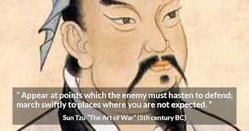 |
| A leader leads by example, not by force. ~ Sun Tzu | 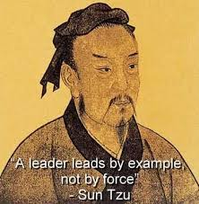 | |
| eBay | 2024 Historic Autographs YesterYear Sun Tzu Design 1 NEGATIVE PARALLEL #2 /75 | eBay | 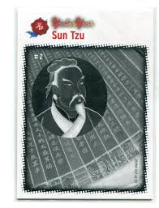 |
| Academia.edu | PDF) Meng Zi (Meng Tzu; Latinized as Mencius) | 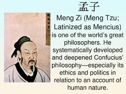 |
| Kwize | Sun Tzu: “Force him to reveal himself, so as to find out his...” | 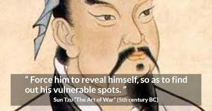 |
| No kitty so sad : r/MaleSurvivingSpace | 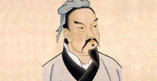 | |
| eBay | China (Republic/Taiwan) Stamp Scott #1428, Mint Never Hinged | eBay | 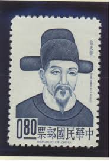 |
| chinesestamp.org | C092/JI92/纪92, Scientists of Ancient China (2nd Set)《中国古代科学家（第二组）》 - Chinese Postage Stamps | China Postage Stamps | Chinese Stamp Album | China Philatel | ACPF | Stamps Catalogue of PRC | 中国邮票目录| | 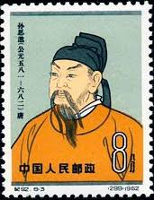 |
| eBay | PR China Stamps T151 Bronze Chariot Emperor Qin Heritage 20 S/S FDC 22 Sets MNH | eBay | 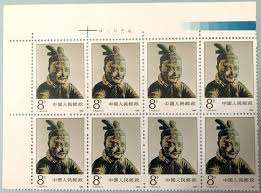 |
| eBay | PRC Stamp Scott# 641 Sun Szu-miao, physician 1962 L98 | eBay | 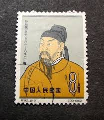 |
| Keep moving forward #inspired #truth #nigeria #inspiration | Sandra C Duru | Facebook | 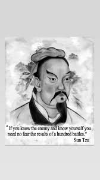 | |
| eBay | China PRC #Mi3186 MNH 2000 Ancient Thinkers Confucius [3059] | eBay | 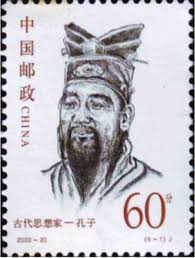 |
| eBay | China PRC #Mi3384 MNH 2002 Scientists Liu Hui [3227] | eBay | 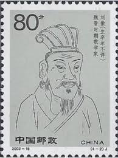 |
| SlideServe | PPT - CHIN 260 Introduction to Chinese Civilization PowerPoint Presentation - ID:3575553 | |
| X | Victor Kotsev (@vkotsev) / Posts / X | |
| Alamy | 372 289 hi-res stock photography and images - Alamy | |
| Etsy | Sun Tzu Art of War Book Author Glossy Poster Picture Photo Print Banner Conversationprints - Etsy | |
| transitionstates.com | 紀33m 中国古代科学者(1次)小型シート（未使用、初日印、4種... | |
| eBay | pr of china 2022-24 founder chinese medicine zhang zhongjing souvenir sheet |